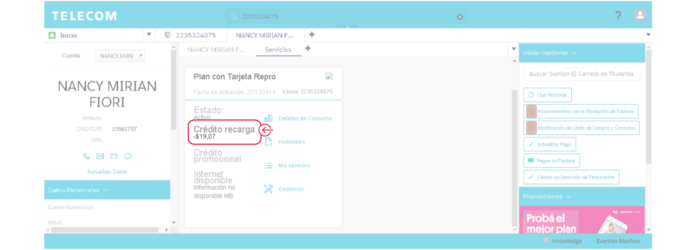

Al igual que en las líneas de los sistemas Legados (Siebel/Celsis), se encuentra habilitado el Extra Saldo para las líneas #Fan.
¿En qué consiste este modelo de préstamo de crédito?
Cuando los clientes lleguen a un umbral de $5 le enviaremos un SMS comunicándole que recibirá un préstamo de saldo, activándose de forma automática $20 de crédito sobre su línea. El Extra Saldo que se genere será descontado de la siguiente recarga que haga el cliente, de forma parcial o total.
Aclaraciones
Podrás visualizarlo desde la Vista Inicial en la Card del cliente con el ítem “Crédito recarga”:
